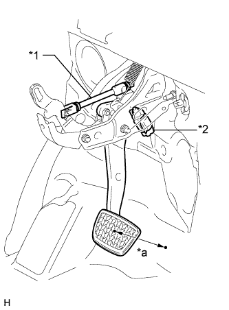
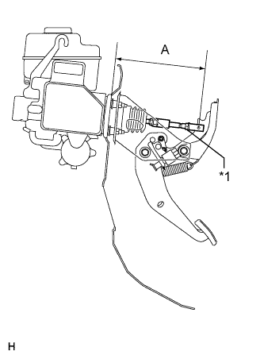
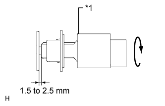
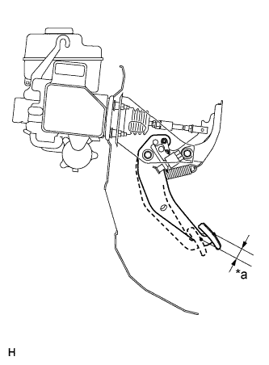
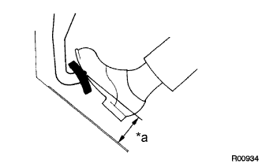

BRAKE PEDAL > ADJUSTMENT |
| 1. CHECK BRAKE PEDAL HEIGHT |
|  |
Check the brake pedal height.
| *1 | Rod Operating Adapter |
| *2 | Stop Light Switch Assembly |
| *a | Pedal Height |
|  |
Adjust the rod operating adapter length.
Remove the clip and push rod pin.
Loosen the clevis lock nut.
| *1 | Clevis Lock Nut |
Adjust the rod operating adapter length by turning the pedal push rod clevis.
Tighten the clevis lock nut.
Install the clip and push rod pin.
If the pedal height is incorrect even if the rod operating adapter is adjusted, check that there is no damage to the brake pedal, brake pedal lever, brake pedal bracket or dash panel.
| 2. CHECK AND ADJUST STOP LIGHT SWITCH ASSEMBLY |
Disconnect the stop light switch assembly connector from the stop light switch assembly.
Turn the stop light switch assembly counterclockwise and remove the stop light switch assembly.
|  |
Insert the stop light switch assembly until the body hits the brake pedal bracket.
| *1 | Stop Light Switch |
Make a quarter turn clockwise to install the stop light switch assembly.
Connect the stop light switch connector to the stop light switch assembly.
Check the protrusion of the rod.
Install the push rod pin and clip.
After adjusting the pedal height, check the pedal free play.
| 3. CHECK PEDAL FREE PLAY |
|  |
Stop the engine and depress the brake pedal several times until there is no more vacuum left in the booster.
Push in the pedal until the resistance is felt. Measure the distance.
| *a | Pedal Free Play |
| 4. CHECK PEDAL RESERVE DISTANCE |
|  |
Release the parking brake lever. With the engine running, depress the pedal and measure the pedal reserve distance.
| *a | Pedal Reserve Distance |